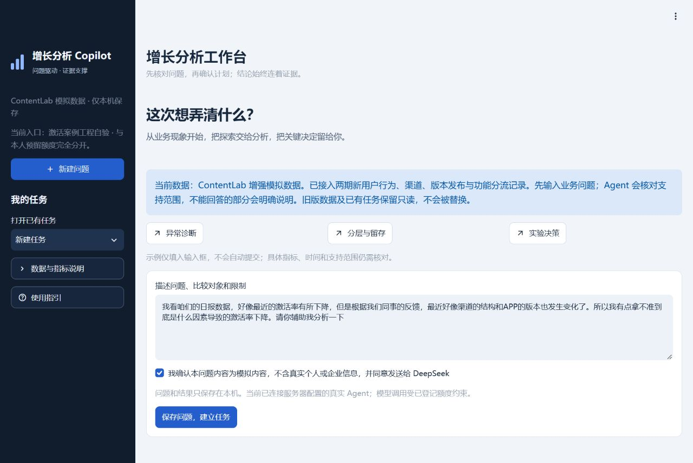
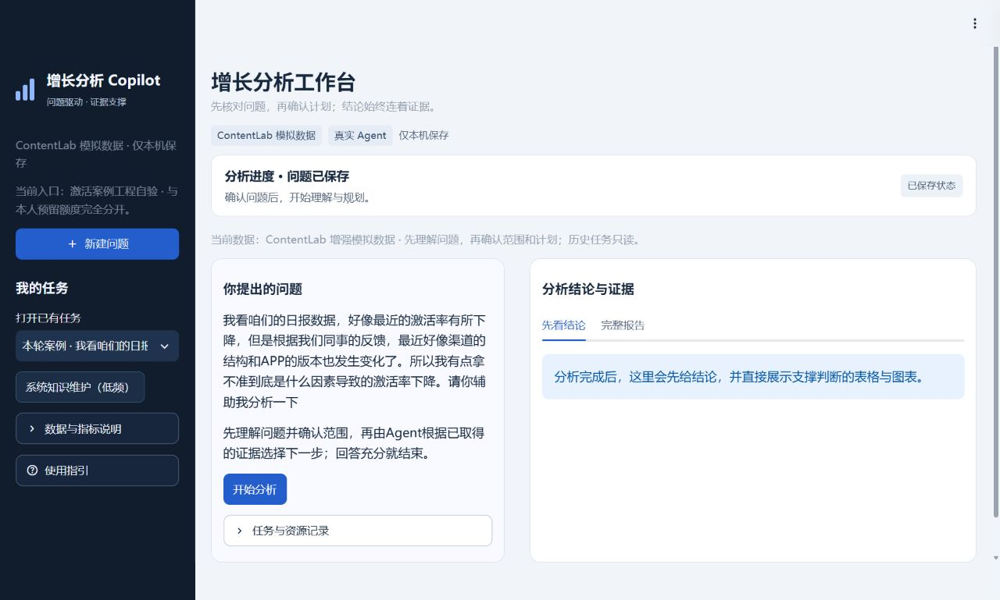
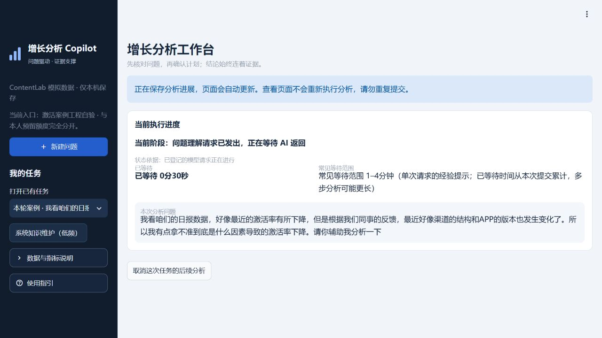
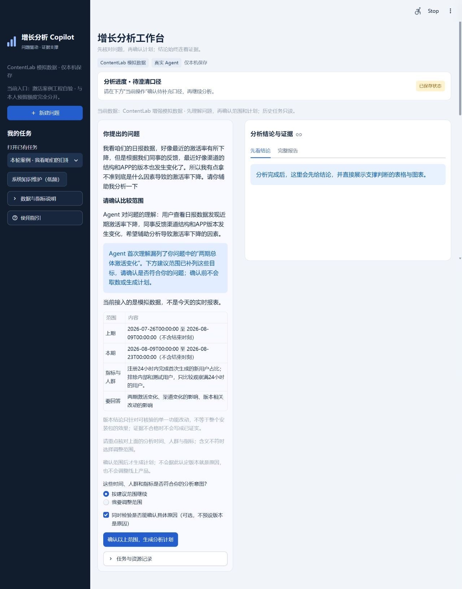
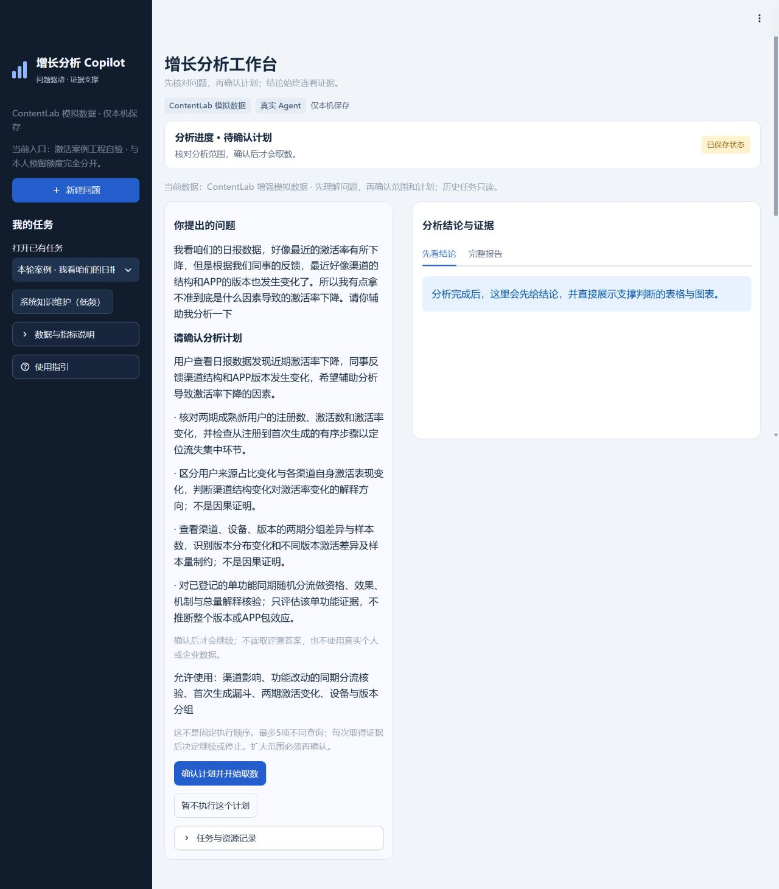
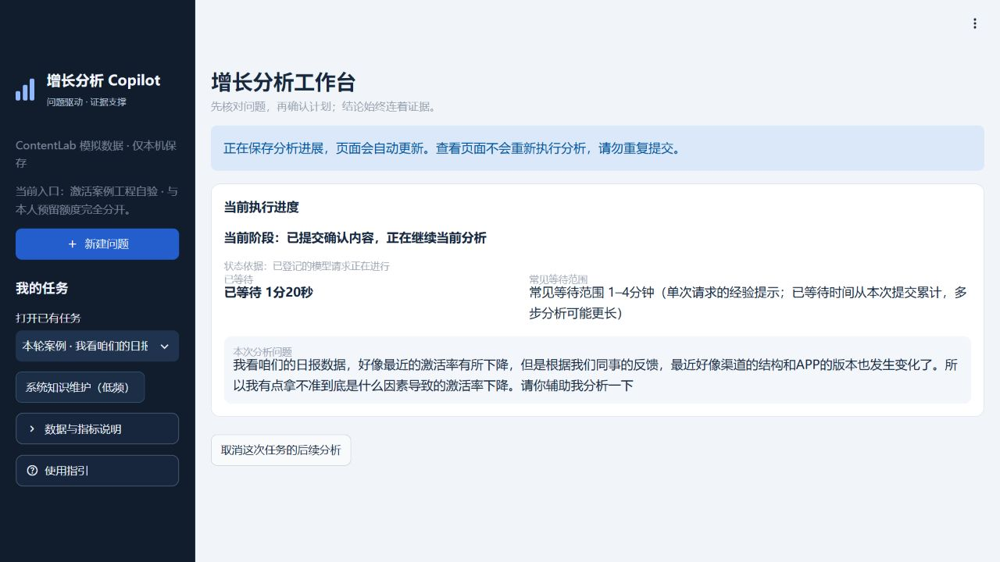
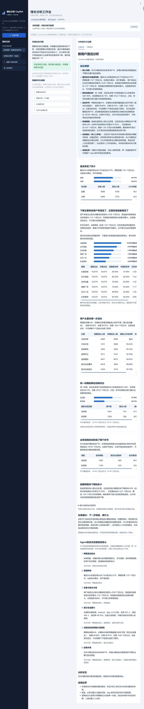
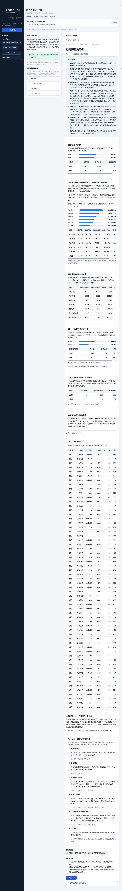

企业增长分析 Copilot
从一句业务疑问，到有证据、有边界、可行动的分析结论。
面向运营分析与决策的受控分析原型 · ContentLab 为模拟业务产品
一、一页纸主线
1．这是什么工具，解决什么问题？
企业增长分析 Copilot，是面向运营人员的受控分析 Agent 原型。 用户用自然语言提出问题，确认分析时间、人群和指标后，Agent 在允许的工具范围内取数，根据中间证据选择下一步分析或停止，最后交付“结论 → 图表与证据 → 行动建议”。
它解决的不只是“把数据画成图”，而是运营排查中的三个问题：先查什么、为什么继续查、证据够不够支持判断。 模型负责理解和分析决策；受控查询与计算工具(程序)负责数字；人负责范围确认和业务实施。
2．分析对象：ContentLab AI
ContentLab 是本项目设计的模拟 AI 内容工作台，面向内容运营、社媒运营、营销人员和创作者，支持内容生成、优化、跨平台改写与保存／复制／导出。
用户旅程：注册 → 新手引导 → 选择角色与平台 → 选模板 → 提交需求 → 生成内容 → 保存／复制／导出 → 重复使用 → 订阅。
本次只研究前半段：新用户注册后24小时内，是否成功完成首次生成。 这不等同于“已经取用内容”或“已经留存”。查询使用注册及渠道、行为事件、生成结果、设备与版本、功能分流记录；不是只向模型投喂一张汇总表。
3．真实运行案例：激活率下降，究竟先查哪里？
运营提出的原始问题（逐字保留）：
我看咱们的日报数据，好像最近的激活率有所下降，但是根据我们同事的反馈，最近好像渠道的结构和APP的版本也发生变化了。所以我有点拿不准到底是什么因素导致的激活率下降。请你辅助我分析一下
| 实际分析动作 | 得到了什么证据 | 为什么继续或停止 |
|---|---|---|
| 核对总体变化 | 激活率69.73% → 62.07%，下降7.67个百分点 | 确认问题存在，但还不知道原因 |
| 拆分渠道影响 | 来源占比贡献0；渠道内部表现合计拉低7.67个百分点 | 不能简单归因于获客渠道换了，要继续查内部差异 |
| 按设备与版本分组 | 观察到目标安卓版本人群的激活表现差异 | 版本标签只是线索，仍不足以证明原因 |
| 检查两期首次生成漏斗 | 提交生成请求的上步完成率89.60% → 80.97%，下降8.62个百分点 | 找到流失集中位置，但还不能确定原因 |
| 核验同版本、同期的功能随机分流 | 新增必填信息流程比旧流程激活率低29.22个百分点；流失集中在选模板后提交需求的环节 | 获得单项改动的原因证据，再折算总体影响 |
| 停止并汇报 | 这项流程改动估计解释总体下降的86.28%；其余约1.05个百分点未解释 | 已回答本轮主要问题，不为展示而追加无必要查询 |
业务建议：运营与产品优先评估必填步骤能否取消、后置或简化，研发核对必要信息约束；先小范围验证步骤完成率、24小时激活率及信息质量，再由负责人决定是否推广。
4．这个案例体现了什么 Agent 能力？
展示重点是有依据地选择，而不是刻意少跑工具。 本次工程运行实际执行了5种分析工具，然后停止；模型每一步引用已有证据选择下一步。此次恰好用了全部允许工具，不把它宣传为提前停止案例。实验效果、环节定位和总体折算由同一次功能核验返回，不能算成三次独立下钻。
项目成果是可运行的分析闭环，不是线上增长收益。 数据为明确设计的模拟数据，86.28%是估计解释比例，不是激活率提升；本轮只支持目标安卓用户、指定时期与单项流程改动的结论，不证明整个 App 版本的效果，也不等于任意企业问题都可回答。
二、让面试官看懂业务与数据
两个产品，不要混淆
| 名称 | 服务谁 | 在本作品中的位置 |
|---|---|---|
| 企业增长分析 Copilot | 运营／分析人员 | 我们实际搭建、运行并展示界面的分析工具 |
| ContentLab AI | 内容运营、营销人员、创作者 | 被分析的模拟业务产品；用于构造用户旅程与业务数据，不是已上线的客户产品 |
用户在哪一步流失？
注册 → 新手引导 → 选择角色/平台 → 选模板
本期目标安卓用户，同一 App 3.2.0
直接提交需求
先填写新增必填信息
提交生成请求
首次生成成功
本案例的24小时激活标准
保存 / 复制 / 导出
重复使用 → 订阅
上述流程图是业务说明，不是 ContentLab 的真实界面截图。新旧流程是同一安装包中的功能分流，而不是拿两个不同版本的全部差异直接比较。
| 数据 | 能回答的业务问题 | 不能单独证明什么 |
|---|---|---|
| 用户注册与渠道记录（users） | 两期来了多少人，各渠道占比多少 | 用户是否真的完成首次生成 |
| 用户行为（events） | 引导、选模板、必填步骤、提交请求发生在哪个环节 | 某个分组差异一定由版本造成 |
| 生成记录（content_generations） | 是否成功生成，是否在注册后24小时内 | 用户已经取用内容或长期留存 |
| 版本发布记录（app_releases） | 版本时间和改动背景 | “同期发布”就是下降原因 |
| 功能分流记录（experiment_assignments） | 谁被分到哪种流程、何时分配与曝光 | 无需检查分组、样本及记录质量就能下因果结论 |
产品还定义订阅、反馈数据，但本次主案例没有分析订阅或反馈，不把可用数据当作已经查询。
本次比较范围
- 总体比较：2026年7月26日—8月8日与8月9日—8月22日，两期各6000名新用户；排除内部／测试用户，且注册后已经有完整24小时观察窗口。
- 功能比较：本期2700名目标安卓用户，均为 App 3.2.0；在引导前按用户稳定随机分流，旧流程1342人、新流程1358人。覆盖六个渠道，并非只选一个渠道，也不是逐人精确配对。
- 模拟设计：数据生成机制中预先设置了新必填步骤的负向影响，用来验证分析链是否能找到机制；这不是事后从真实公司数据发现的新业务规律。运行时 Agent 基于可见业务合同与数据分析，不读取隐藏生成概率或评测答案。
三、真实流程截图与逐步说明
同一次完整运行：以下主流程全部来自2026年10月10日工程任务
product-f6eb959821c5043a2c353f64ab34752b，不混入此前本人任务。一页一图：同一页面的连续截图已按滚动位置去重拼接为长图，文字、图表和按钮直接使用原图像素，不重绘、不生成内容。固定侧栏与顶部工具栏只保留一次；侧栏下方延续背景。原始56张展示图全部保留，可查原始截图索引。下方标注“拼接长图”的图片不是一次性拍摄的单张截图。
工程入口18502与本人入口8501使用同一运行代码，额度独立。操作由Codex完成，不冒充Alex本人体验。本次实际下载的完整离线报告，新标签页可独立阅读全部表格。
01 从正常首页提出业务问题
用户用日常业务语言说明现象与怀疑方向，不输入SQL，也不指定每一步查询。以下分别是首页、问题已保存、理解执行中三个不同状态，不将不同时刻拼成一个页面。



02 确认时间、人群与指标
关键看点：Agent提出建议范围，用户可以接受或调整；“同时检验具体原因”不代表预先认定版本是原因。
本次首次理解漏列了“两期总体激活变化”，系统在确认页明确提示并补入建议范围，由人确认后继续。这是真实运行中的纠漏，不隐去提示，也不伪装成模型首次理解完全正确。

上图由3张连续原图拼接，覆盖1630px整页，底部范围选项、原因核验勾选项、确认按钮与资源记录入口均完整保留。
03 确认分析计划与允许使用的工具
关键看点：本次界面列出4条分析目标、5种允许工具。目标与工具不是一一对应；确认的是本轮分析范围，并非固定执行顺序。后续每一步仍根据已取得证据作选择。

上图由3张连续原图拼接，覆盖1461px整页，完整保留全部计划、工具范围、确认及暂不执行按钮。
04 实际取数与分析
确认后只提交一次执行命令。运行中的真实等待页如下；逐步决策依据见完成报告，不把事后报告冒称每一步实时画面。

05 阅读完整的结论与证据页面
这是一张连续长图，不再把同一报告拆成需要读者自行对应的多张截图。 从上向下依次是：结论摘要 → 总体与渠道变化 → 两期漏斗 → 同期新旧流程核验 → 影响规模 → 决策记录 → 行动与边界。图片较长，可点击查看原尺寸。

宽表补充（按需查看）：纵向拼接不改变表格本身的横向滚动状态。以下直接标注对应表格，保留右侧隐藏列；无需判断补图属于哪一步：总体表右列，新标签页 · 渠道表右列，新标签页 · 漏斗表右列连续长图，新标签页 · 新旧流程表右列，新标签页 · 流失环节表右列，新标签页。完整横向内容也可直接阅读上方离线报告。
06 如何理解流失环节、原因证据与影响规模
对应上方同一长图的中段，不再重复贴图。本次先通过两期有序漏斗定位“提交生成请求”环节变化，再查询同期单功能分流。两期漏斗是定位线索；随机分流才是本例主要原因的核验证据。 功能核验返回的效果、机制与总体折算，仍只算一次工具分析。
07 如何解读实际决策记录
对应上方同一长图的后段。本次真实路线：总体 → 渠道 → 设备与版本 → 首次生成漏斗 → 功能分流核验 → 停止。 一共5次分析工具执行、6次选择（含停止）。本次恰好使用了全部允许工具，不能据此声称它展示了“提前少跑工具”。
| 决策时已知的证据 | 下一步选择 | 为什么值得查 |
|---|---|---|
| 原问题及已确认范围，尚未取数 | 总体变化 | 先验证下降事实，不接受原因猜测作为结论 |
| 总体下降7.67个百分点 | 渠道影响 | 区分来源结构变化与渠道内部表现变化 |
| 来源占比贡献0，渠道内部表现下降 | 设备与版本分组 | 继续核查用户原问题提到的版本线索 |
| 分组存在差异，但版本标签不能证明原因 | 首次生成漏斗 | 定位注册到首次生成中更具体的流失环节 |
| 提交生成请求环节前后变化最大 | 功能分流核验 | 检查已登记单项流程改动是否具有更可信的原因证据 |
| 单项改动核验通过，估计解释大部分下降 | 停止作答 | 回答本轮主要问题，保留未解释部分和适用边界 |
怎样讲动态下钻：展示“前一步的新证据 → 后一步工具选择”的真实记录，而不是仅凭报告有多个章节。此前本人成功运行用了4种工具，本次用了5种，说明不能固定背工具数量；这一差异本身仍不是严格的Agent／Workflow效果对照实验。
08 业务行动与可选后续
运营与产品优先评估必填步骤能否取消、后置或简化；研发核对必要信息约束，再小范围验证步骤完成率、激活率及信息质量。分析完成，不代表方案已经实施或带来真实增长。
业务建议和三个可选入口已包含在步骤05整页长图：解释结论、继续分析、补充信息。本次未点击它们发起第二轮分析，不虚报额外体验。
09 完整报告标签页：从顶部到下载入口
这是同一任务的另一阅读视图，包含全部60行设备与版本分组数据。19张连续视口已合成一张9290px长图，保留正文与底部下载入口；面试主讲无需逐行念表。

查看60行版本分组的右侧列连续长图，新标签页。共同证据表右列见步骤05明确命名的补图，或直接打开离线HTML阅读；补图与主长图共同保留完整证据，不省略横向列。
工程取证说明
此前失败任务 product-07b3c68f7b4df6118fd5f1d6aaa1e1aa 原样保留，不恢复、不覆盖。随后定位到模型计划使用了未注册工具名；本轮只把规划输出工具名约束为已批准的真实枚举，保留语义门禁，未修改业务数据、分析逻辑或结论。本次新任务完整通过；单次通过不等于任意问题都不会失败。
完整复跑新增1模型单元、9次API、0.108549美元，全部结算，无新增未知请求；Alex池未变。本次拼图仅使用已有原始截图，新增业务模型调用和费用均为0。 详细工程证据见本次补图验收记录。
我的工作
- 场景与设计
- 面向运营分析与决策，主导需求拆解、指标口径、交互流程及验收规则，将问题澄清、范围确认、分析计划、受控 SQL 查询和证据报告串联为本地工作台。
- 案例与验证
- 以模拟 AI 内容产品的激活下降为案例，按分析结果推进渠道、设备版本、生成漏斗等核验；一次完整验证串联 5类工具、19条受控查询，生成图表及可追溯的离线 HTML 报告。